什么是软件测试？
所谓测试，就是以检验产品是否满足需求为目标，而软件测试，自然是为了发现软件（产品）的缺陷而运行软件（产品）。比较标准的定义是：在规定的条件下对程序进行操作，以发现错误，对软件质量进行评估。
软件测试的目的是什么？
一般的误区是认为测试的目的是尽可能发现并改正被测试软件中的错误，提高软件可靠性，实际上软件测试的目的是验证需求，检验是否满足规定的需求或是弄清预期结果与实际结果之间的差距，而bug是这个过程中的产品而非目标
软件测试的分类？
软件测试按测试手段分可以分为白盒测试和黑盒测试，一般讲的软件测试就是指黑盒测试
黑盒测试容易实施，不需要关注内部的实现，更贴近用户的使用角度，一般只关注是否有不正确或遗漏的功能，在接口上输入输出是否正确，是否有数据或玩不信息访问错误，性能是否满足要求等等，但是测试覆盖率比较低，且针对黑盒的自动化测试，复用率较低，维护成本较高。
白盒测试针对的就是代码里具体的语句、条件、分支，可以检测代码中的每条分支和路径，揭示隐藏在代码中的错误，对代码的测试比较彻底。缺点是需要测试人员仔细思考软件的实现，理解原理。作为开发人员编写的单元测试就是白盒测试的一种。
什么是单元测试？
单元测试又称为模块测试，是针对程序模块来进行正确性检验的测试工作。这个模块可以是单个函数，也可以是一整个功能点。通常来讲，开发人员每修改一次程序，就会进行最少一次单元测试，在编写程序的过程中前后很可能要进行多次单元测试，确保他们所写的代码符合软件需求和遵循开发目标。
下面以一个控制台的计算器程序作为例子来进行单元测试的演示
namespace Calculator |
我们先新建一个单元测试项目Calculator.Tests
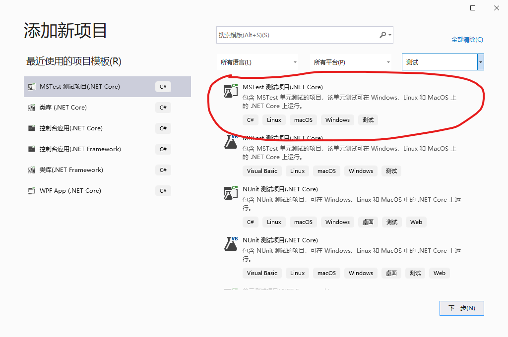
修改项目Calculator.Tests中的UnitTest1.cs为CalculatorTests，然后修改类名为CalculatorTests，然后删除默认的测试方法，自己重新添加测试方法。
namespace Calculator.Tests |
这几个方法就是对单个方法单元测试，此时的测试模块就是类Calculator中的每个方法。
但是我们发现让第三方每次都要调用不同的方法不太方便，我们就封装一个方法来给第三方调用
namespace Calculator |
然后我们就可以针对这个方法来写单元测试了
namespace Calculator.Tests |
此时测试的模块就是这个Calc方法，也可以理解为对整个计算功能的测试
测试方法的创建除了手动添加，也是可以用VS自动创建的，以Calc方法为例
在Calc方法上右击，选择创建单元测试
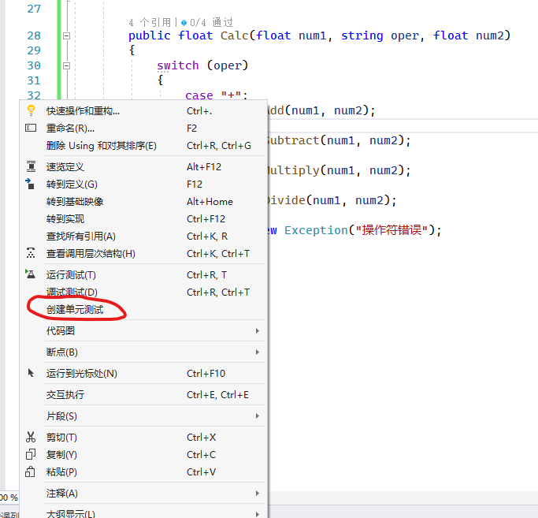
会弹出创建单元测试对话框
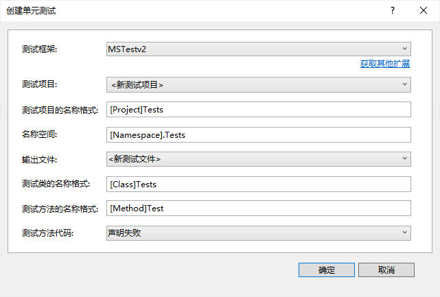
在这里我们可以选择测试框架，支持第三方的测试框架，比如NUnit。然后选择测试项目，测试项目的名称格式、命名空间、输出文件等等内容，点击确定后会按照你的选择生成一个新的测试方法
namespace Calculator.Tests |
然后根据自己的情况进行修改
测试用例怎么产生？
我们写单元测试，不可能随便去写，一个计算器功能的单元测试我们不可能把所有的数字全部测试一遍，所以肯定有相应的方法去选择测试数据
等价类
等价类定义：指具有相同属性或者方法的集合，这个集合中某个个体所表现的特征与其他个体完全一致，对于被测试对象的输入而言，某个个体能够被接受或被拒绝，则该个体所在集合中的任意个体都应该被接受或拒绝。
等价类划分：等价类分为有效等价类和无效等价类，有效等价类指对被测对象而言，合理的、有意义的、系统接受的输入，无效等价类指对被测对象而言，不合理的、没有意义的、系统不能接受的输入，比如对方法
Divide而言第二个数为0就是没有意义的。边界值
边界值分散点
上点：边界上的点，比如
Calculator中，输入类型为float，那么float.MaxValue和float.MinValue就是两个边界值离点：离上点最近的点，根据上点的精度确定
内点：边界有效范围内的任意一点，这里一般随便拿个数就行
如何确定离点？
如果边界是闭区间，则离点在外，如果边界是开区间，则离点在内
因果图
输入与输入的关系
关系 说明 异 所有输入条件中最多有一个产生，也可以一个没有 或 所有输入条件中最少有一个产生、或者多个，或者所有 唯一 所有输入条件中，有且只有一个条件产生 要求 所有输入条件，只要有一个产生，其他跟着也会出现 输入与输出的关系
关系 说明 恒等 当输入条件发生时，结果一定会出现，当输入条件不发生时，结果一定不会出现 非 当输入条件发生时，结果一定不会出现，当输入条件不发生时，结果一定会出现 与 当多个输入条件中，只有所有输入条件都发生时，结果才会出现 或 当多个输入条件中，只要有一个发生，结果就会出现 其他：判定表、正交试验、场景设计法等等
测试覆盖率
为了保证测试的质量，我们还要考虑到测试的代码覆盖率，这个我们可以借助Vistual Studio的工具来实现
在VS中打开测试资源管理器
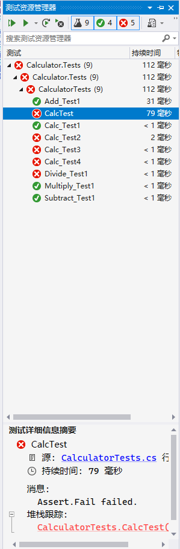
在想查看的测试方法或者测试组上右击，选择分析代码覆盖率
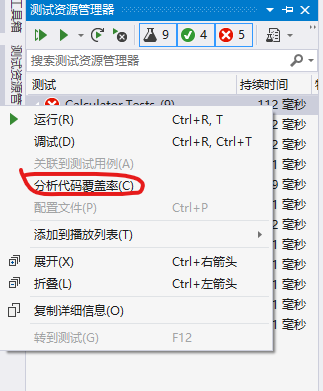
VS会重新生成项目并监测代码覆盖率，并显示到代码覆盖率结果窗口中
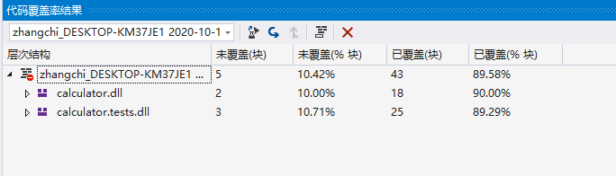
在这里我们可以看到从测试项目开始所有被引用的项目的代码覆盖率情况，展开后可以看到具体到方法的覆盖情况
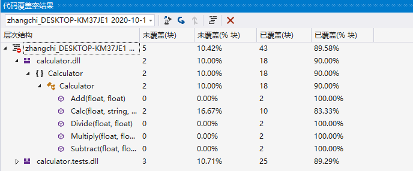
双击其中一项未覆盖大于0的项，VS编辑器会打开并跳转到对应的文件，未覆盖的地方会高亮显示
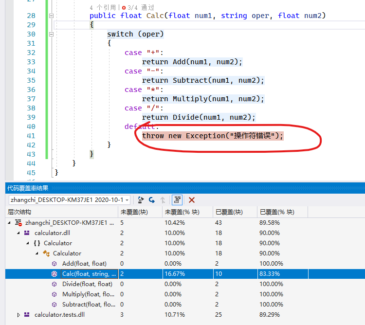
根据逻辑添加对应的测试方法直到覆盖率达到100%
[] |
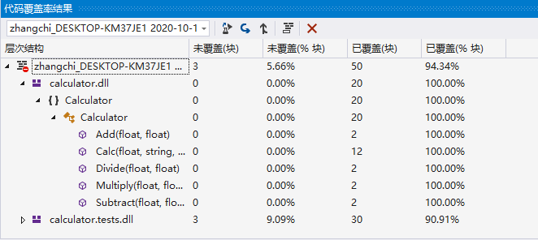
IntelliTest
如果项目是.Net Framework开发的，还可以用VS自带的另一个工具IntelliTest，来自动生成单元测试
我们在Calculator类名上右击，选择IntelliTest->创建IntelliTest，弹出创建IntelliTest对话框
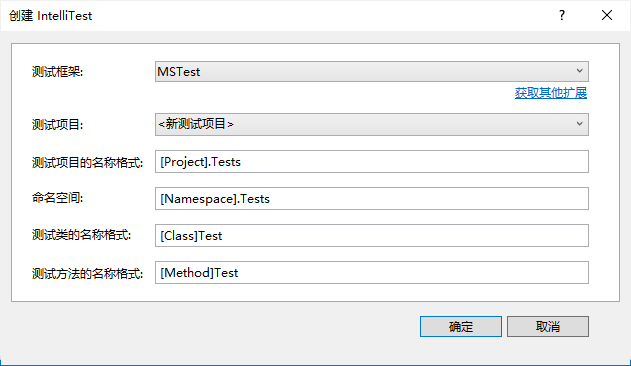
选择或填好各个项目，点击确定，VS会根据你的选择生成对应的单元测试
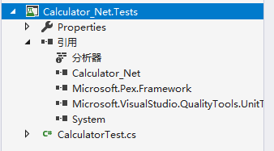
其中的CalculatorTest.cs文件就是自动生成的单元测试
打开CalculatorTest.cs文件，我们发现里面对Calculator类里面所有的公开方法都生成了单元测试，但是单元测试方法中并没有具体的测试用例。我们选中CalculatorTest类名，右击选择IntelliTest->运行IntelliTest，VS会自动运行CalculatorTest类里面的测试方法，并在IntelliTest研究结果窗口中显示测试结果
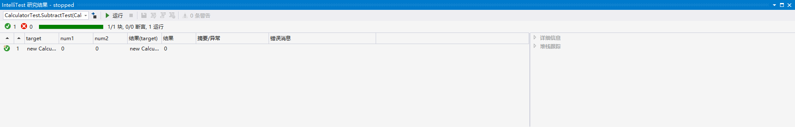
我们选中任一项测试用例，就可以看到对应的详细信息
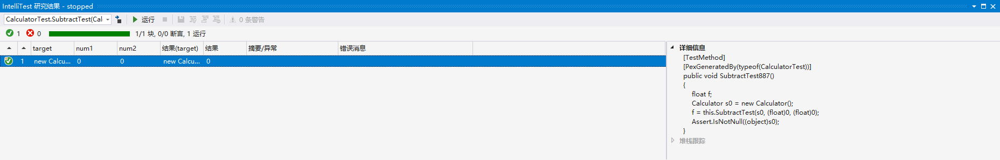
同时，在解决方案资源管理器窗口中我们会发现刚才的测试项目下新添加了几个文件
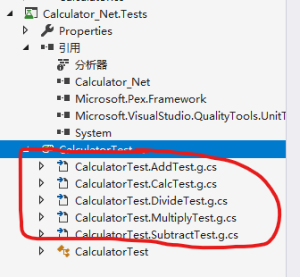
这几个文件中就是具体的测试用例执行代码